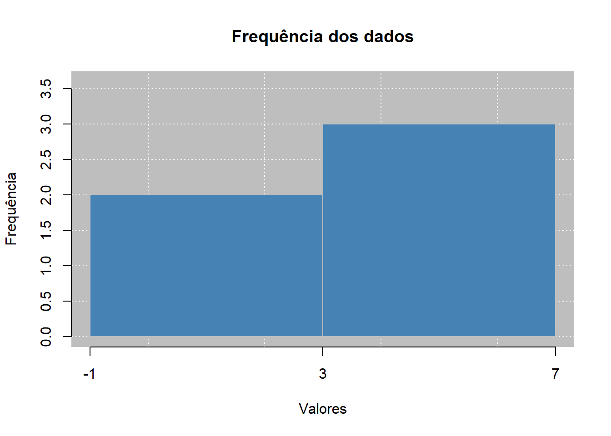

[1] 25[1] "Giovana"[1] 20

Estatística e Probabilidade
Prof. Ben Dêivide (DEFIM/CAP/UFSJ)
O R é uma linguagem de programação e ambiente de software de código aberto, e tem foco na computação estatística e análise de dados. Foi consolidada como uma das ferramentas padrão padrão na ciência de dados moderna, permitindo desde análises financeiras complexas até bioinformática. Assim o R, é uma linguagem que possui uma grande comunidade ativa, que possui uma grande comunidade ativa, que sempre está contribuindo para o desenvolvimento de recursos e pacotes, e por esse motivo é muito adotado o R é uma linguagem amplamente adotada por diversas áreas, como estatística e ciência de dados.
Seu diferencial é a sua capacidade de promover pesquisas reprodutíveis, e para isso integra o código, a análise e a visualização em u fluxo coeso. Este relatório, apresentará como realizar a configuração inicial para programar em R, além de apresentar os conceitos básicos da linguagem e como ela pode ser útil para análises estatísticas e manipulação de dados.
Realizar a instalação do R e do RStudio e aprender o básico da linguagem R.
leem.O primeiro passo para programar em uma linguagem é a configuração do ambiente de desenvolvimento.
Para este relatório será utilizado o ambiente do RStudio, uma interface gráfica que facilita a programação em R, mas é importante destacar que o R pode ser utilizado em outros ambientes, como o VS Code, Jupyter Notebook, ou mesmo diretamente no terminal do sistema operacional.
O R em si é a linguagem de programação, enquanto o RStudio é um ambiente de desenvolvimento integrado (IDE) que oferece uma interface amigável para escrever código, visualizar gráficos e gerenciar projetos em R.
Para configuração do ambiente:
Nesta parte será apresentada a sintaxe básica da linguagem R, incluindo a estrutura de comandos, a forma de escrever código e as convenções de nomenclatura. A sintaxe é a base para a escrita de qualquer linguagem de programação, é fundamental a compreensão dela para a construção de códigos em R.
Para chamar variaveis e funções em R, basta escrever o nome da variável ou função, seguido de parênteses para funções, por exemplo:
[1] 25[1] "Giovana"[1] 20Veja as seções de operadores básicos, tipos de dados e funções básicas para entender melhor a sintaxe da linguagem R e o código acima.
Linguagens de programação possuem diferentes tipos de dados para armazenar informações, os tipos de dados em R são:
Numéricos: para armazenar números, como 1, 2.5, etc.
Em R todos os números são armazenados como numéricos do tipo double (mesmo que pareça inteiro o R trata assim para garantir que qualquer operação futura seja precisa), mesmo que sejam inteiros (é um prduto flutuante, esse termo se refere a maneira como o computador armazana números que podem ter casas decimais), floats ou outros tipos, a linguagem lida por trás dos panos com a conversão de tipos, então não é necessário se preocupar com isso.
numero1 <- 10
numero2 <- 3.14
numero1[1] 10numero2[1] 3.14Inteiros: para armazenar números inteiros, como 1L, 2L, etc.
Mesmo com o tipo Numérico, é possível armazenar números inteiros usando o sufixo “L”, por exemplo, 10L, isso é útil para garantir que um número seja tratado como inteiro em operações específicas.
inteiro1 <- 10L
inteiro2 <- 20L
inteiro1[1] 10inteiro2[1] 20Complexos: para armazenar números complexos, como 1 + 2i, etc.
complexo1 <- 1 + 2i
complexo2 <- 3 - 4i
complexo1[1] 1+2icomplexo2[1] 3-4iCaracteres: para armazenar texto, como “Olá”, “Mundo”, etc.
texto1 <- "Olá"
texto2 <- "Mundo"
texto1[1] "Olá"texto2[1] "Mundo"Lógicos: para armazenar valores booleanos, como TRUE ou FALSE.
logico1 <- TRUE
logico2 <- FALSE
logico1[1] TRUElogico2[1] FALSEFunção class() e typeof(): A primeira mostra a identidade do objeto, retorna o atributo da classe do objeto, diz como as outras funções devem tratar esse objeto. Já a segunda tem uma natureza interna, revela como o R armazena o objeto na memória do computador, retorna a natureza do dado.
No R é comum encontrarmos funções que parecem fazer a mesma coisa, mas extraem informações diferentes dos dados, as duas principais para investigação de objetos.
nome <- "Giovana"
idade <- 25
# Verificando o nome
typeof(nome)[1] "character"class(nome)[1] "character"dados <- data.frame(nome, idade)
# Aqui aparece a diferença
typeof(dados)[1] "list"class(dados)[1] "data.frame"::: {.callout-note} Acredito que é importante de mencionar já que funções falham por esperar um objeto, e isso é bom para ter uma ideia de qual é o problema, mas não vamos nos aprofundar muito nisso por serem conceitos mais comprexos :::
Vetores: para armazenar uma sequência de elementos do mesmo tipo(homogêneos). Como os vetores são homogêneos, todos os elementos dentro deles precisam ser do mesmo tipo, se tentar misturar dados diferentes ocorre a coerção automática, que segue uma hierarquia, para evitar a perda de informações transforma o tipo mais simples no mais flexível (Logical se torna Integer; Integer se torna Double; Double se torna Character)
Nos vetores muitos usam a função c() sem saber que é uma abreviação de combine, essa função serve para agrupar elementos individuais em uma estrutura de dados unidimensional.
vetor_numerico <- c(1, 2, 3, 4, 5)
vetor_texto <- c("A", "B", "C", "D", "E")
vetor_numerico[1] 1 2 3 4 5vetor_texto[1] "A" "B" "C" "D" "E"Listas: para armazenar uma coleção de elementos de diferentes tipos(heterogêneos). Assim, uma lista pode armazenar números, textos, valores, vetores e outras listas (e por esse último, são chamados de recursivos)
lista1 <- list(a = 1, b = 2, c = 3)
lista2 <- list(d = "A", e = "B", f = "C")
lista1$a
[1] 1
$b
[1] 2
$c
[1] 3lista2$d
[1] "A"
$e
[1] "B"
$f
[1] "C"Matrizes: para armazenar dados homogêneos em uma estrutura bidimensional.
matriz1 <- matrix(1:6, nrow = 2, ncol = 3)
matriz2 <- matrix(c("A", "B", "C", "D", "E", "F"), nrow = 2, ncol = 3)
matriz1 [,1] [,2] [,3]
[1,] 1 3 5
[2,] 2 4 6matriz2 [,1] [,2] [,3]
[1,] "A" "C" "E"
[2,] "B" "D" "F" Data Frames: são a base para a maioria das análises estatísticas e armazenam dados heterogêneos em uma estrutura bidimensional (cada coluna pode ter um tipo de dado diferente, contando que todas as colunas tenham o mesmo comprimento).
dataframe1 <- data.frame(col1 = c(1, 2, 3), col2 = c("A", "B", "C"))
dataframe1 col1 col2
1 1 A
2 2 B
3 3 CArrays: para armazenar dados homogêneos em uma estrutura multidimensional.
array1 <- array(1:8, dim = c(2, 2, 2))
array1, , 1
[,1] [,2]
[1,] 1 3
[2,] 2 4
, , 2
[,1] [,2]
[1,] 5 7
[2,] 6 8Fatores: para armazenar dados categóricos.
fator1 <- factor(c("A", "B", "C", "A", "B"))
fator1[1] A B C A B
Levels: A B CComo toda linguagem de programação, R possui operadores básicos para realizar operações matemáticas, lógicas e de comparação. Esses operadores são essenciais para a construção de códigos em R e permitem manipular dados de forma eficiente.
<- ou =Atribuição é o processo de armazenar um valor em uma variável. Em R, a atribuição pode ser feita usando o operador <- ou =, a diferença dos operadores está no escopo, <- é o operador de atribuição tradicional em R e é recomendado para a maioria dos casos, enquanto = é mais comumente usado em argumentos de funções. Por exemplo:
::: {.callout-note} O <- pode ser usado em qualquer lugar do código, enquanto o = é restrito geralmente para a definição de argumentos dentro de funções. :::
+, -, *, /, ^ ou **, %%Esses operadores são usados para realizar operações matemáticas básicas, como adição, subtração, multiplicação, divisão, exponenciação e resto de divisão. Por exemplo:
==, !=, <, >, <=, >=Esses operadores são usados para comparar valores e retornar um resultado lógico (TRUE ou FALSE). Por exemplo:
&, |, !Esses operadores são usados para combinar condições lógicas. O operador & representa a conjunção (AND/E), o operador | representa a disjunção (OR/Ou) e o operador ! representa a negação (NOT/Não). Por exemplo:
[ ], [[ ]], $Esses operadores são usados para acessar elementos específicos de vetores, listas ou data frames. O operador [ ] é usado para acessar elementos por posição, o operador [[ ]] é usado para acessar elementos por nome e o operador $ é usado para acessar colunas em data frames. Por exemplo:
vetor <- c(10, 20, 30, 40, 50)
lista <- list(a = 1, b = 2, c = 3)
dataframe <- data.frame(col1 = c(1, 2, 3), col2 = c("A", "B", "C"))
elemento_vetor <- vetor[2] # Acessa o segundo elemento do vetor
elemento_lista <- lista[["b"]] # Acessa o elemento "b" da lista
coluna_dataf <- dataframe$col1 # Acessa a coluna "col1" do data frame::: {.callout-note} Veja a seção tipos de dados para melhor entendimento do código acima. :::
Funções são blocos de código que realizam uma tarefa específica e podem ser reutilizados em diferentes partes do código. Em R, existem muitas funções pré-definidas para realizar operações comuns, como calcular a média, a variância, o desvio padrão, entre outras.
Soma: sum(), calcula a soma de um conjunto de números.
sum(x = c(1, 2, 3, 4, 5))[1] 15Valor Absoluto: abs(), calcula o valor absoluto de um número.
abs(x = -10)[1] 10Raiz Quadrada: sqrt(), calcula a raiz quadrada de um número.
sqrt(x = 16)[1] 4Logaritmo: log(), calcula o logaritmo de um número.
log(x = 100, base = 10) # Calcula o logaritmo de 100 na base 10[1] 2Arredondamento: round(), arredonda um número para um número específico de casas decimais.
round(x = 3.14159, digits = 2) # Arredonda para 2 casas decimais[1] 3.14Exponencial: exp(), calcula o valor exponencial de um número.
exp(x = 1) # Calcula e elevado a 1[1] 2.718282Média: mean(), calcula a média aritmética de um conjunto de números.
mean(x = c(1, 2, 3, 4, 5))[1] 3Variância: var(), calcula a variância de um conjunto de números.
var(x = c(1, 2, 3, 4, 5))[1] 2.5Desvio Padrão: sd(), calcula o desvio padrão de um conjunto de números.
sd(x = c(1, 2, 3, 4, 5))[1] 1.581139Mediana: median(), calcula a mediana de um conjunto de números.
median(x = c(1, 2, 3, 4, 5))[1] 3Máximo e Mínimo: max() e min(), calculam o valor máximo e mínimo de um conjunto de números, respectivamente.
max(x = c(1, 2, 3, 4, 5))[1] 5min(x = c(1, 2, 3, 4, 5))[1] 1Tamanho: length(), calcula o número de elementos em um vetor ou lista.
length(x = c(1, 2, 3, 4, 5))[1] 5Nomes: names(), retorna os nomes dos elementos em uma lista ou data frame.
names(x = list(a = 1, b = 2, c = 3))[1] "a" "b" "c"Dimensão: dim(), calcula as dimensões de uma matriz ou data frame.
dim(x = matrix(1:6, nrow = 2, ncol = 3))[1] 2 3Número de Linhas e Colunas: nrow() e ncol(), calculam o número de linhas e colunas em uma matriz ou data frame, respectivamente.
nrow(x = matrix(1:6, nrow = 2, ncol = 3))[1] 2ncol(x = matrix(1:6, nrow = 2, ncol = 3))[1] 3Classe: class(), retorna a classe de um objeto em R.
class(x = c(1, 2, 3, 4, 5))[1] "numeric"O Uso de pacotes em R é fundamental para expandir as funcionalidades da linguagem e facilitar a realização de tarefas específicas. Pacotes são coleções de funções, dados e documentação que podem ser facilmente instalados e carregados em R. Existem milhares de pacotes disponíveis para diversas áreas, como estatística, ciência de dados, visualização, entre outras. Importante mencionar que, pacotes são criados por membros da comunidade e podem ser encontrados no repositório oficial do CRAN ou em outros repositórios, como o GitHub.
Para instalar e carregar um pacote em R, basta usar a função install.packages() e library(), passando o nome do pacote como argumento. Por exemplo, o pacote ggplot2, que é amplamente utilizado para visualização de dados, basta executar:
install.packages("ggplot2") #Instala o pacote ggplot2
library(ggplot2) #Carrega o pacote ggplot2 para usoAlguns pacotes possuem uma grande popularidade e são amplamente utilizados pela comunidade, como:
ggplot2: para visualização de dados.dplyr: para manipulação de dados.tidyr: para organização de dados.readr: para leitura de arquivos.stringr: para manipulação de strings.lubridate: para manipulação de datas.caret: para machine learning.tidyverse: para um conjunto de pacotes importantesleemNa disciplina de Estatística e Probabilidade, o pacote leem é uma ferramenta útil para realizar análises estatísticas e manipulação de dados. Ele oferece uma variedade de funções para calcular medidas de tendência central, variabilidade, gráficos, entre outras funcionalidades.
O pacote leem é mantido pelo professor Ben Dêivide e pode ser instalado e carregado da seguinte forma:
install.packages("leem") #Instala o pacote leem
library(leem) #Carrega o pacote leem para usoleemAlguns exemplos de funções que serão utilizadas durante a disciplina são:
new_leem(): para criar um objeto do tipo leem.
library(leem)
dados <- c(1, 2, 3, 4, 5)
leem_obj <- new_leem(x = dados, variable = 2)
leem_obj[1] 1 2 3 4 5tabfreq(): para criar uma tabela de frequências.
tabf <- tabfreq(leem_obj)
tabf
Tabela de frequência
Tipo de variável: continuous
Classes Fi PM Fr Fac1 Fac2 Fp Fac1p Fac2p
1 -1 |--- 3 2 1 0.4 2 5 40 40 100
2 3 |--- 7 3 5 0.6 5 3 60 100 60
==============================================
Classes: Agrupamento de classes
Fi: Frequência absoluta
PM: Ponto médio
Fr: Frequência relativa
Fac1: Frequência acumulada (abaixo de)
Fac2: Frequência acumulada (acima de)
Fp: Frequência percentual
Fac1p: Frequência acumulada percentual (abaixo de)
Fac2p: Frequência acumulada percentual (acima de) barplot(): para criar um gráfico de barras a partir de uma tabela de frequências.
barplot(tabf, main = "Frequência dos dados", xlab = "Valores", ylab = "Frequência", barcol = "steelblue")
Para descobrir mais funções do pacote leem e suas aplicações, consulte a documentação oficial.
O R é uma ótima ferramenta para analisar dados estatísticos, de primeiro pode demorar para ser aprendida devido a sintaxe, mas depois ela recompensa com a velocidade e eficiência para resolver problemas complexos e inclusive se integrar com outras linguagens
Agora acho interessante responder algumas perguntas
Respondendo as questões acima
O R foi desenvolvido por e para estatísticos e cientistas de dados, diferente de ferramentas de planilhas, ele permite manipular vários dados com uma grande precisão e garantir que qualquer análise possa ser repetida exatamente da mesma forma, fora que tem pacotes que podem ser instalados que cobrem quase todos os métodos estatísticos existentes, se não todos.
Mesmo o RStudio sendo o padrão para programar em R, você pode usar o VS Code, o Jupyter Notebook (diretamente no terminal do sistema operacional) ou mesmo em plataformas na nuvem, como Posit Cloud e Google Colab.
Interpretar erros em R é um processo de tradução, geralmente na mensagem de erro é indicado onde no código está o erro e porque está errado, logo acredito que no início, e mesmo depois, o segredo é copiar o código e jogar no ChatGPT e pergutar como arrumar e entender a causa da raiz.
As fontes de apoio que acho interessantes são: